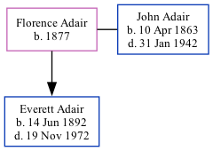

Florence Lighthizer Adair (née Adair) 1877 -
[ Home ] | [ Surnames Index ] | [ Family History ] was born in Wisconsin in 18771 and had 1 child with John Adair: Everett William. In 1910, she was living in Precinct 4, Routt, Colorado1.
Children
- Everett William was born on Jun 14, 1892
Citations
- 1910 United States Federal Census Ancestry.com Operations Inc (Age in 1910: 33; Marital Status: Married; Relation to Head of House: Wife)
Family Tree
Data (GEDCOM) maintained by Jay Weston Hannah, Omaha, Nebraska, USA.
Website generated by ged2site. Last updated on Jun 18, 2024.